박성문
가설을 검증하는 개발자."
가설을 묻고, "동작하는 결과물"을 의심하는 것에서
진짜 학습이 시작된다고 믿습니다.
- 리눅스마스터 2급 2026.04
- SQLD 2025.09
- 정보처리기능사 2021.10
- 호서대학교 컴퓨터정보공학부 소프트웨어트랙 · 학사
2018.03 – 2024.02 · 졸업 학점 3.63/4.5 (130학점)
- (주)이카운트 개발본부 인턴
2026.06 – 2026.07 - SSAFY (삼성청년SW·AI아카데미) 14기 JAVA 전공반 수료
2025.07 – 2026.06 - TOPOLAR (토니스엘리트 코딩) 코딩학원 강사 · 정직원
2021.08 – 2022.09 - 토니스엘리트 코딩학원 강사 · 파트타임
2017.12 – 2019.12
- SSAFY 14기 AI 드로잉 러닝 챌린지 프로젝트 우수상 · 2026.05
- SSAFY 14기 인공지능 음성 AI 활용 프로젝트 우수상 · 2026.03
- SSAFY 14기 성능 테스트 기반 AI 코드 리뷰 프로젝트 우수상 · 2026.02
개발 외에 사람을 모으고 의견을 조율하는 일에도 시간을 많이 썼습니다.
학생회 · 학회 · 멘토 활동을 통해 다양한 학년 · 학과의 사람들과 함께 일해본 경험이 있습니다.
1. 동작 신뢰성 — Reliability
- WebSocket SockJS Fallback 사건 — 101 OK 만 보고 안심하지 않고, 실제 transport 끝까지 검증
- Jenkins SHA 검증 단계 도입 — 빌드 성공 ≠ 배포 반영을 파이프라인이 직접 검증
- 회원 탈퇴 cascade 정리 — try-catch 로 덮지 않고 연관관계 주인을 다시 그림
- 사용자 임베딩 NULL 사고 — 저장과 조회 사이 타입 매핑 책임 지점 추적
2. 빠른 응답성 — Responsiveness
- Kafka 비동기 분리 — 추천 벡터 계산을 사용자 응답 경로에서 분리
- Docker Multi-stage Build — 이미지 1GB+ → 슬림 JRE 베이스
- Docker 레이어 캐싱 — Gradle 의존성과 소스 레이어를 분리
- DLT 헤더 기반 추적 — 실패 메시지 보존 + 본 흐름 차단 X
3. 데이터 보안성 — Security
- 음원 파일 접근 권한 누락 발견 — Nginx 통과 후 owner 검증 누락 케이스
- GitHub Webhook HMAC-SHA256 서명 검증 — 외부 신뢰 경계를 첫 줄에서
- JWT 인증 풀스택 책임 (BLUEFOX) — OAuth → AT → 내부 JWT 발급/검증
- JWT 파싱 실패 폴백 처리 — 관측이 본 흐름을 절대 막지 않도록
4. 리소스 효율 — Resource Efficiency
- 벡터 저장소 통합 — Qdrant 별도 운영 대신 PostgreSQL 한 곳으로
- Docker Multi-stage + 레이어 캐싱 — 이미지 1GB+ → 200MB 대
- 추론 컨테이너 로컬 분리 — FastAPI / Qdrant 를 로컬로 분리해 비용 절감
- 컴포넌트 1개 감축 — 운영해야 할 인프라 면적 자체를 줄이는 접근
아래 4개 프로젝트는 모두 SSAFY 14기 협업 프로젝트입니다. DrawRun 은 팀장으로 진행했고, 나머지 3개는 팀원으로 참여했습니다.
DrawRun
내가 달린 경로와의 유사도 점수로 주차별 랭킹을 다투는 러닝 챌린지 서비스
| Flutter + Riverpod | GPS / 센서 / 타이머 멀티 스트림 → Provider 단위 상태 책임 분리 |
| naver_map + OSM | "두 점만 찍어도 도로를 따라가는 폴리라인" UX → 다익스트라 경로 직접 다룸 |
| webhookBridge 분리 | GitLab + Jenkins → Mattermost 알림을 본 BE 와 섞지 않고 별도 컨테이너로 |
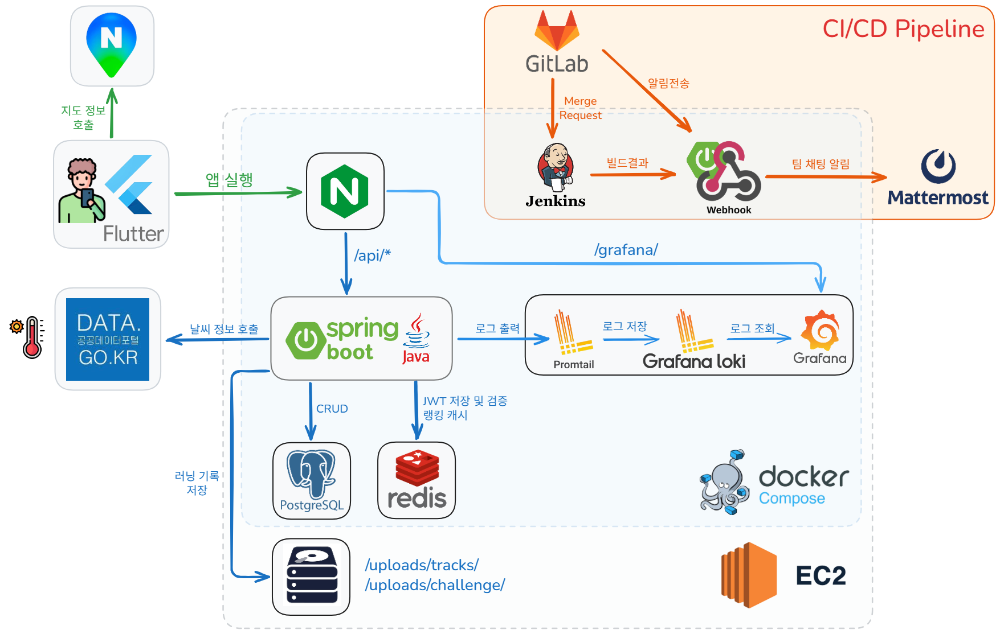
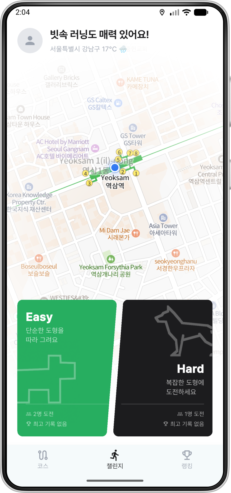
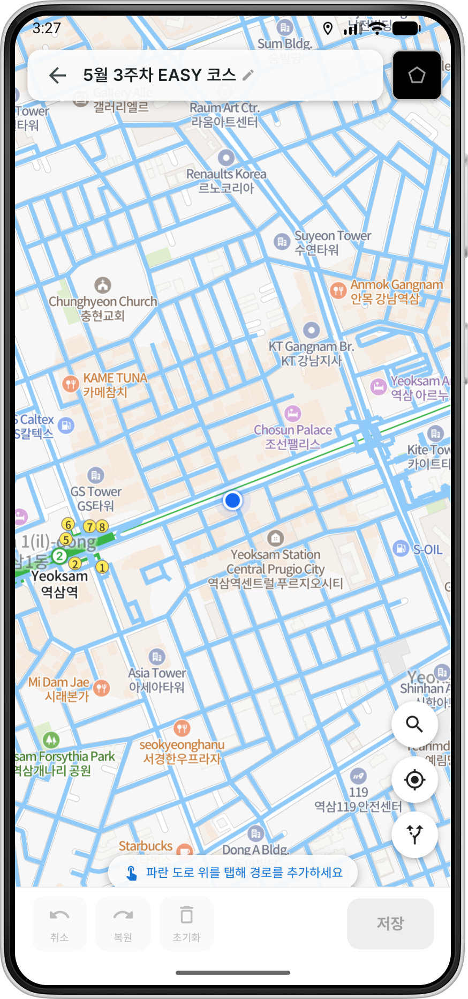
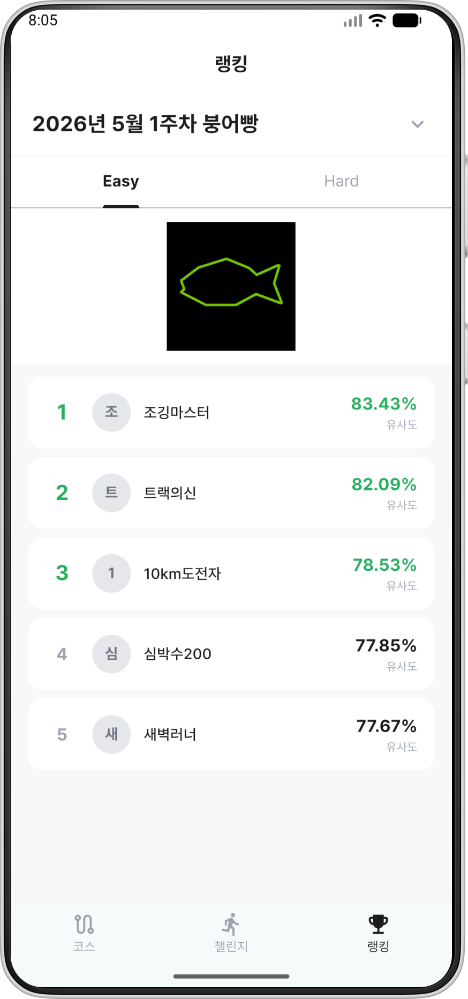
- [팀장] 6 인 팀 운영, GitLab MR 템플릿(develop/main), 컨벤션 표준화, 머지 게이트키퍼
- [FE] 러닝 플로우 전체 — 카운트다운 → 진행 → 일시정지 → 종료 → 결과, 백그라운드 측정 유지
- [FE] 케이던스 · 칼로리 · 고도 계산 — step_counter / step_detector 센서 통합
- [FE] 기록 도메인 전체 — 통계 / 무한스크롤 히스토리 / 상세 / 경로 보기 / 제목 수정
- [FE] 트랙 캡처 스냅샷 정합성 fix — 다익스트라 routeCoords 를 스냅샷이 사용하도록 연결
- [FE] 마이페이지 잔디 위젯 — 최근 12주 주별 그리드, 빈 셀 보장
- [INFRA] webhookBridge 단독 설계·구현 — GitLab + Jenkins → Mattermost 알림 브릿지 (Spring Boot · Dockerfile · Converter)
- [INFRA] Docker Compose · Nginx — 9 개 컨테이너 오케스트레이션 · 리버스 프록시 · SSL 라우팅
- [BE] challenge · editor · record 도메인 — Controller / Service / Converter, 챌린지 폴리곤 URL 응답
- [BE] 본인 상세 조회 API · 주간 활동 통계 API
"트랙 캡처가 직선으로 찍히던" 사건
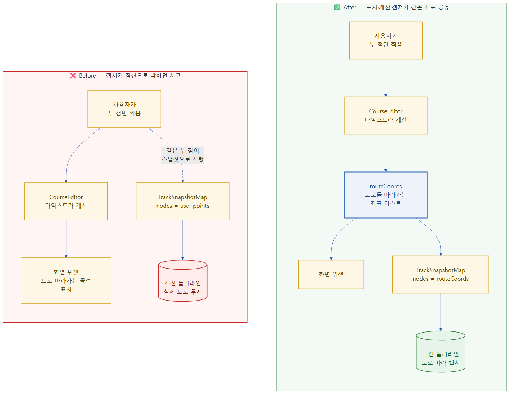
"카운트다운 진입 직후 폴리곤 가이드가 사라지던" 통합 버그
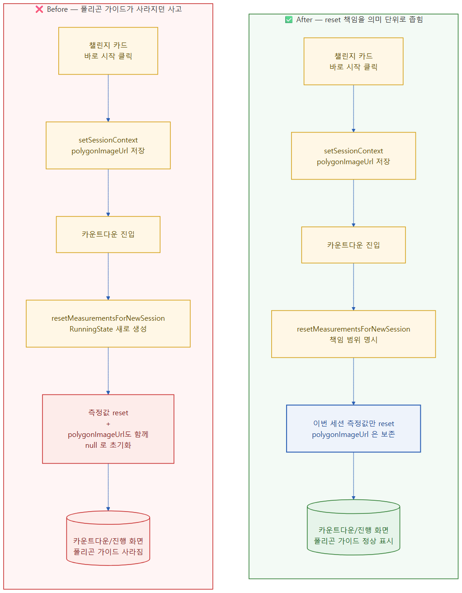
The Interview
글을 쓰는 게 부담스러운 사람도 말로 자기 생각과 감정을 기록하고, 그 결과를 매거진처럼 모아볼 수 있게 한 서비스입니다.
| Docker (단일 호스트) | 13개 컨테이너를 4계층(db/app/management/monitoring)으로 분리 |
| Jenkins CI/CD | "빌드 성공 ≠ 배포 반영" 을 사람이 매번 잡지 않게 파이프라인이 책임 |
| Prom + Grafana + Loki | 운영 환경 OOM 사고를 추측 아닌 그래프로 잡기 위해 도입 |
| Nginx + Let's Encrypt | 여러 도메인 / API / 정적 자원을 한 EC2 에서 일원화 |

- [BE] 인터뷰 도메인 — 공유 / 탐색 / 북마크 / 이어하기 / 강제 종료
- [BE] 회원 도메인 — 가입 / 탈퇴 / cascade 정리
- [BE] 공유 게시판 (ShareBoard) — 포스트잇 레이아웃, 키워드 검증
- [BE] 알림 시스템 — 공유 받은 질문에 대한 답변 알림
"빌드는 성공인데 배포가 안 된 것 같다" 가 반복
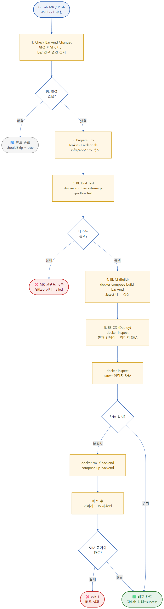
"동작하는 것처럼 보이던" 통신을 3차 추적 끝에 잡아낸 사건
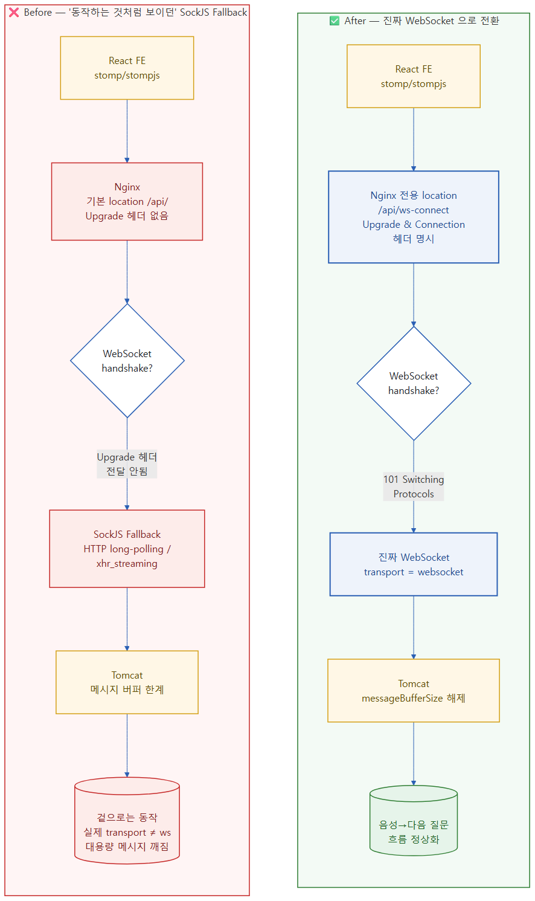
BLUEFOX
부하 테스트 입문자에게 친화적인 웹 서비스
| OAuth2 + 내부 JWT | GitHub Access Token 을 클라이언트에 노출 X → 내부 JWT 로 격리 |
| GitHub App + IAT | 사용자 토큰만으로 부족한 Org Repo 접근을 App private key 기반 IAT 로 |
| HMAC-SHA256 서명 검증 | Webhook 은 외부 신뢰 X → 서명 검증을 코드 첫 줄에 두어 경계 명확화 |
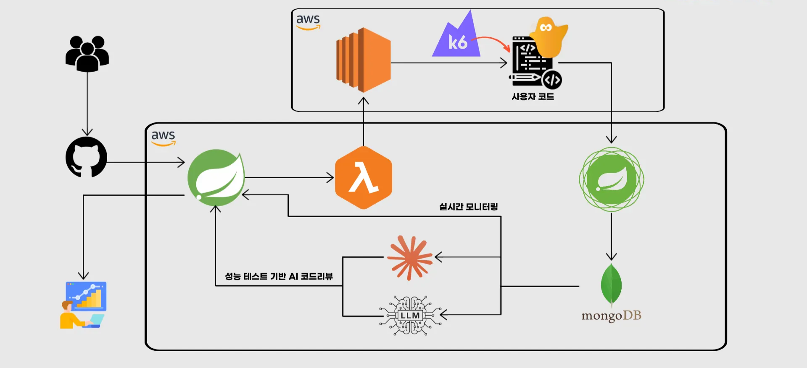
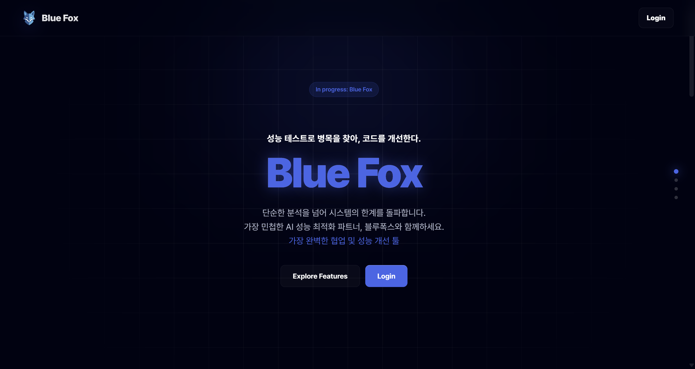
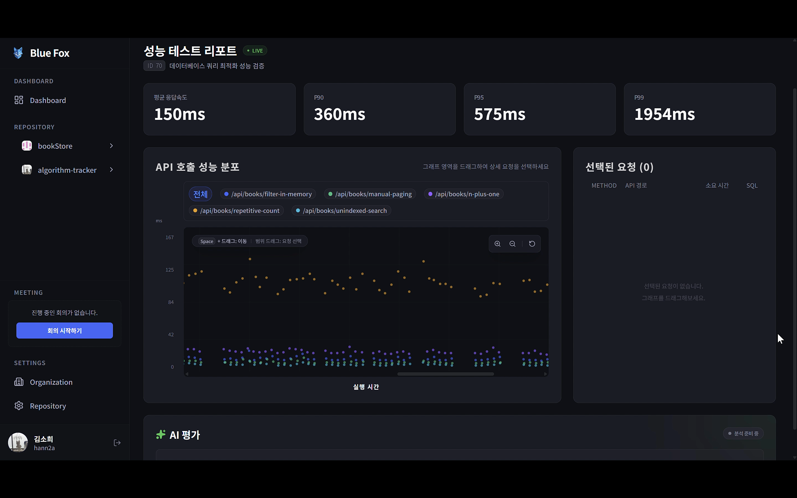
- JWT 기반 로그인 / 인증 파트 전체 — Spring Security 설정, OAuth Code → AT 교환, JWT 발급/검증 필터, 토큰 만료 대응, 인증 컨텍스트 주입
- PR 상세 / 파일 / 커밋 / 리뷰 / 타임라인 조회 API — GitHub REST API 응답 가공, Record DTO 표준화
- GitHub Webhook 수신 서버 — HMAC-SHA256 서명 검증, 이벤트 타입별 라우팅, Repository 자동 동기화
- Organization · Installation 연동 — App private key → JWT → IAT 발급 → Org Repo 동기화
GitHub Access Token 을 절대 클라이언트에 보내지 않는다
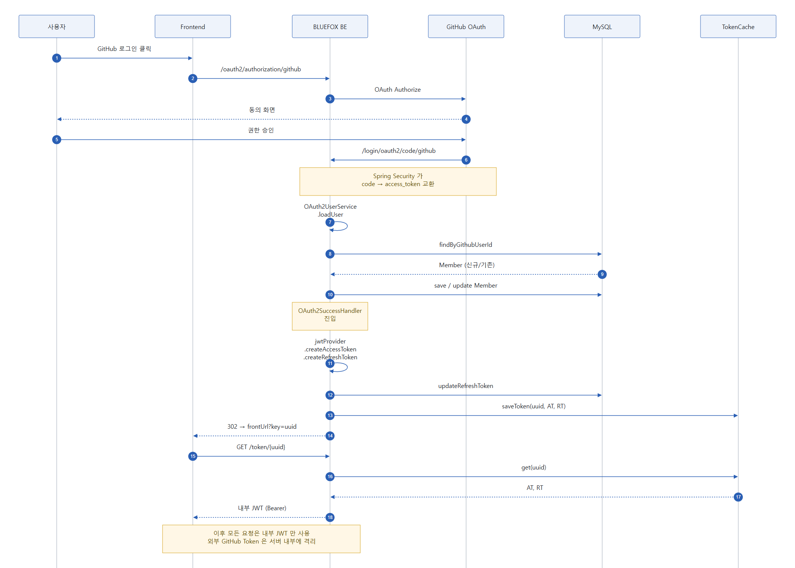
Org 단위 Repo 조회 권한 확보 — App private key → JWT → IAT
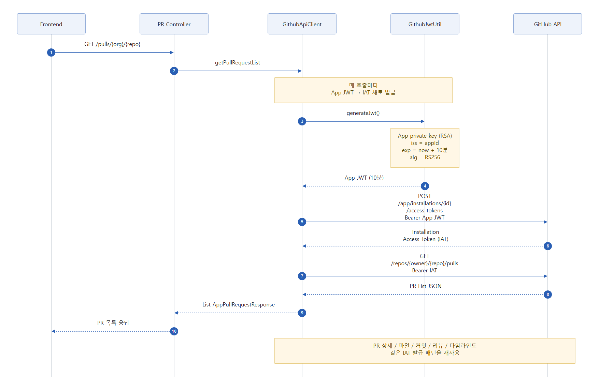
서명 검증을 본 흐름 진입 전에 반드시 한 번
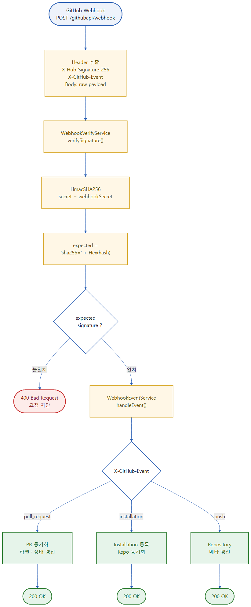
Newstagram
개인화된 기사를 추천하는 지능형 뉴스 서비스
| Apache Kafka (KRaft) | 추천 벡터 계산을 사용자 응답 경로에서 분리, 실패 메시지는 DLT 보존 |
| Spring AOP + Annotation | 로깅이 본 비즈니스 로직에 침투 X — @LogArticleClick 으로 가로채기 |
| PostgreSQL + pgvector | 벡터 저장소를 별도 운영하지 않고 Postgres 단일화 → 컴포넌트 1개 감축 |
| JPA AttributeConverter | Postgres 배열 ↔ Double[] 매핑을 JPA 표준 안에서 자동 처리 |
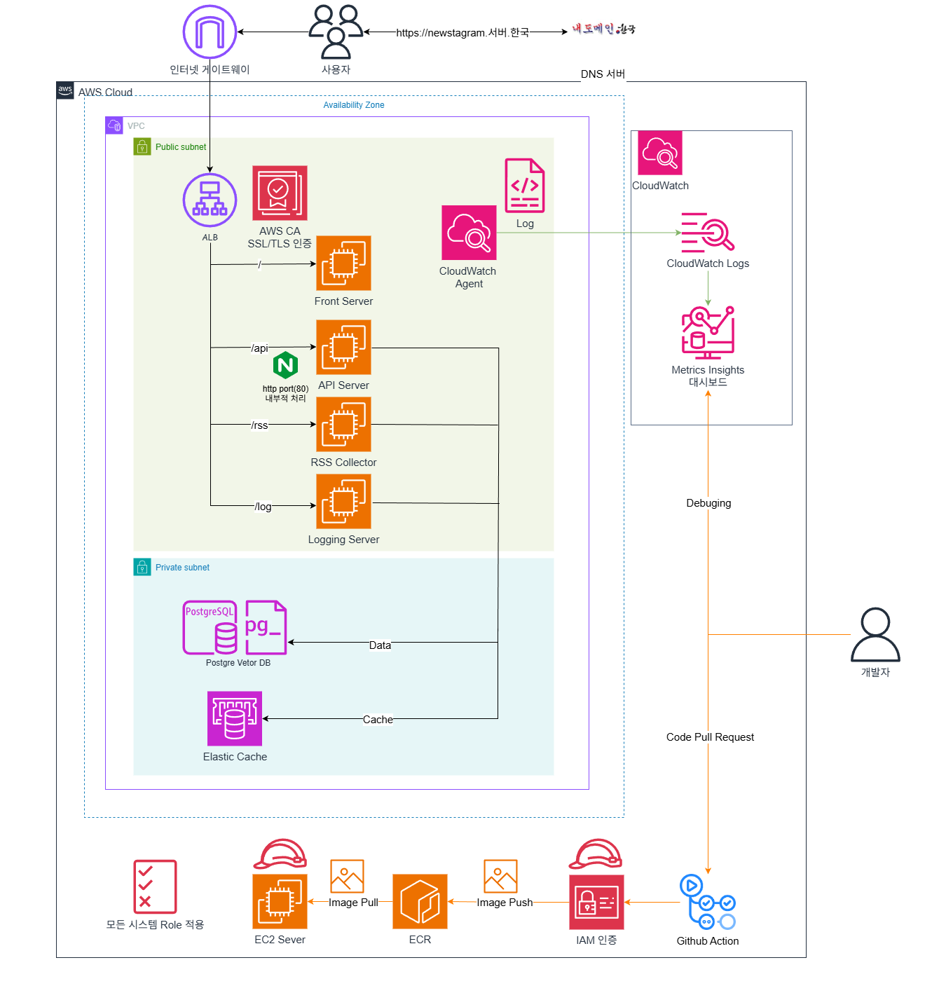
- Kafka 이벤트 파이프라인 — 커스텀 어노테이션 + AOP 로 GET 요청 인터셉트, Producer · Consumer · DLT 리스너 직접 구현
- 사용자 임베딩 벡터 갱신 — 클릭 로그 가중 평균 → pgvector 저장
- 신규 가입자 초기 관심사 부트스트랩 — 설문 → 임베딩 API → 초기 벡터
- JPA Type Converter — Postgres 배열 ↔ Java Double[] 양방향 매핑
- 코드 품질 — 패키지 구조 재편 / 매직 스트링 → 상수 클래스 / 중복 로직 정리
사용자 응답 경로에서 추천 계산을 떼어내고, 실패는 잃지 않기
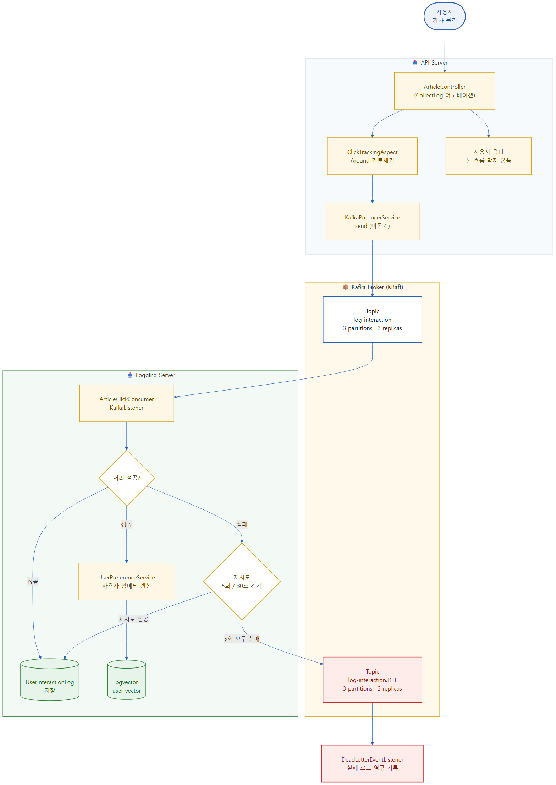
로깅 코드가 비즈니스 로직에 침투하지 않게
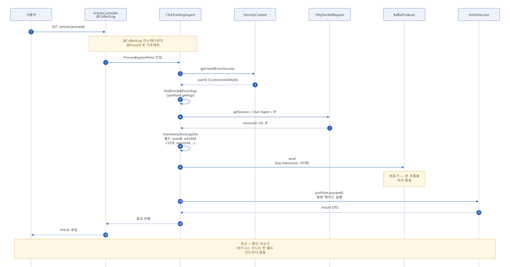
"저장은 됐는데 조회가 NULL"
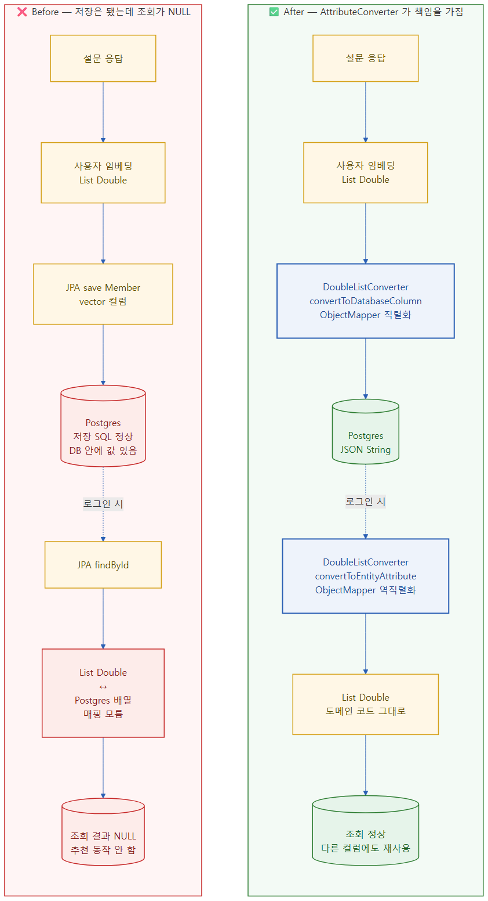
분산 DB
샤딩 / 복제 / 일관성 모델 — 데이터가 여러 노드에 흩어졌을 때의 트레이드오프를 직접 다뤄보기.
무중단 배포
Blue/Green · Canary · Rolling 등 다운타임 없는 배포 전략을 단일 EC2 너머에서.
로드 밸런싱
Nginx 단일 프록시 너머 L4/L7 분산과 헬스체크 · 세션 어피니티 설계.
실시간 스트리밍
Kafka Streams · Flink 로 흐르는 데이터 위 집계 · 윈도우 연산.
대용량 데이터 처리
RSS 수집을 넘어, 사용자 행위에서 발생하는 실시간 대용량 트래픽 처리.
오픈소스 기여
사용자에서 기여자로 — 이슈 → PR 머지 → Committer 권한이 중기 목표.